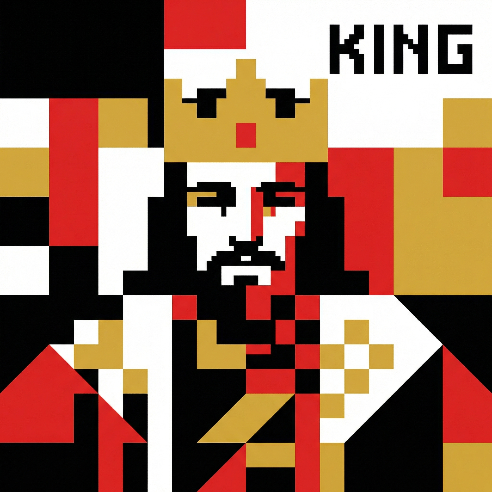

Initial Mode
Original gameplay iteration
Player Centered Design Iteration
A multiplayer card game about player interaction, hidden roles, and strategic decision making. Players observe, manage risk, and react to changing situations through cards, abilities, and shared systems.

Original gameplay iteration
Player-centered redesign
Tyrant's Court is a multiplayer card game about player interaction, hidden roles, and strategic decision making.
Players interact through cards, abilities, and shared systems. The gameplay focuses on player to player tension, uncertainty of information, and timing based decisions. Players observe others, manage risk, and react to changing situations during the game.
The game is built around conflict between players, indirect interaction, and trade offs between gaining power and taking on risk.
The initial design combines several systems into one experience. The game includes hidden roles with different victory conditions, a card system used during gameplay, and a resource system based on Evidence and Suspicion.
A key mechanic appears before the game starts. During the setup phase, all players except the Lord select abilities from a shared ability pool. Each player can choose several abilities that provide strong advantages during the game.
Each selected ability also gives a benefit to the Lord. These benefits can include drawing additional cards or gaining extra effects. This creates a shared cost system where players gain power while also strengthening a common threat.
This setup phase creates an early decision. Players must consider how much power they want to take and how much advantage they are giving to the Lord before the game begins.
After the setup phase, the game continues with card-based interactions. Players draw cards, use abilities, and target each other during their turns.
Some cards generate Evidence, either for the player themselves or for a targeted player. Evidence is not aligned to teams. It is a flexible resource that can be used in multiple ways. A player can spend Evidence to blackmail another player and swap HP, or use it as a defensive card to cancel an incoming attack.
To prevent Evidence from becoming too strong, the system introduces Suspicion. Suspicion is a card that only the Lord can use. When played, it affects all players on the field. Each player loses HP equal to the number of Evidence cards in their hand. This creates a risk where holding more Evidence increases both power and vulnerability.
All players start with a base amount of HP and can be eliminated through attacks or system effects. When a player’s HP reaches zero, they leave the game. However, elimination does not immediately mean losing. The final outcome depends on whether the remaining players fulfill their role-based victory conditions.
During the first round of playtesting, a consistent issue appeared across different players. The problem was understandability.
Players struggled to identify their goals and did not understand how abilities, cards, and resources were connected. Most of their time was spent reading card text instead of making decisions. Strategic thinking did not emerge during early gameplay.
Players described the experience as confusing and overwhelming. The game felt like it required prior knowledge. Instead of feeling tension, players felt uncertain about what to do.
The issue came from how the systems were introduced.
Players needed to process hidden roles, ability effects, card interactions, and resource systems at the same time. This created a high cognitive load.
Because players could not identify what was important, they could not form meaningful decisions. The intended experience of strategy and tension was replaced by confusion.
The design direction shifted toward simplification and clarity.
The system was restructured to focus on one core mechanic, which is the relationship between Evidence and Suspicion. Other systems were reduced or delayed so that players could first understand one central idea.
This change was made to reduce confusion and help players engage with the system earlier.
The structure of the game was simplified by reducing the number of active mechanics in early gameplay. The card pool was also reduced to focus on the core interaction.
A structured learning process was introduced through multiple gameplay setups.
In the first setup, players interact with Evidence without punishment and learn how it functions as hidden power.
In the second setup, Suspicion is introduced and creates risk for holding Evidence.
In the third setup, both systems interact under higher pressure and require players to think about timing and decision making.
This approach allows players to learn through gameplay instead of relying on explanation.
After these changes, a second round of playtesting was conducted.
Players understood the system more quickly and started making decisions earlier in the game. The relationship between mechanics became clearer and players were more engaged.
However, new issues appeared. Some players felt that the game lacked a clear identity. Some turns felt passive and did not create strong interaction between players.
The second problem was related to engagement and identity.
Although players understood the system, the experience still felt similar to other card games. The core mechanic was not strong enough to define the game.
The design included multiple systems, including the ability system, the card system, and the Evidence and Suspicion system. Each system was interesting on its own, but they did not combine into a single focused gameplay experience.
As a result, the experience felt scattered. Players could not clearly explain what the game was about, and there was no single core mechanic that guided how the game should be played.
This lack of focus also affected player engagement. Many actions felt reactive rather than intentional, and players did not feel enough control over their decisions.
For a short-session card game, this made the experience less distinct and harder to stay engaged with.
The new version removes direct attacks between players. All interactions are handled through the Evidence and Suspicion system.
Players influence the game by generating, exposing, and managing Evidence. At the end of each round, the system evaluates Evidence and applies punishment based on player exposure.
Core Gameplay:
Players gain power by accumulating Evidence, but become more vulnerable to punishment. Every decision increases both advantage and risk.
This creates a gameplay structure centered on information, timing, and risk control, where players compete by managing exposure instead of dealing direct damage.
The new version removes direct attacks between players. All interactions are handled through the Evidence and Suspicion system.
Players influence the game by generating, exposing, and managing Evidence. At the end of each round, the system evaluates Evidence and applies punishment based on player exposure.
Core Gameplay:
Players gain power by accumulating Evidence, but become more vulnerable to punishment. Every decision increases both advantage and risk.
This creates a gameplay structure centered on information, timing, and risk control, where players compete by managing exposure instead of dealing direct damage.
After this iteration, the game developed a clearer identity. Players described the system as more focused and easier to understand. The core mechanic became more visible in gameplay.
Some limitations remain. The card pool is still limited and reduces strategic depth. Some turns do not create strong interaction. Random card draw makes long term planning difficult.
This project shows how player feedback can guide design decisions.
The first iteration improved clarity by reducing complexity. The second iteration improved engagement by focusing on the core mechanic.
Both changes were based on player experience and addressed specific issues in understanding and interaction.
In future projects, systems will be introduced more gradually and tested in isolation before being combined.
Player feedback will be used not only to fix problems but to guide the direction of the design.